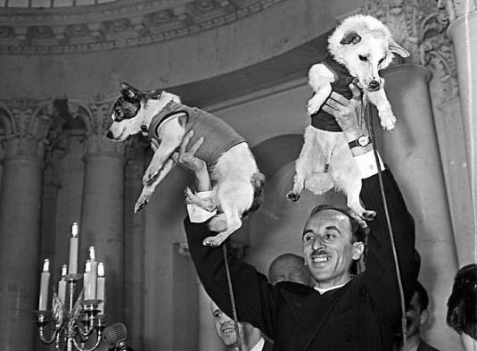

20 марта 1960 года
Порода: беспородная
Возраст: 2,5 года
Состояние здоровья: удовлетворительное
Когда я была щенком, мне говорили, что собаки живут в будках и сторожат дом. А мы со Стрелкой живем в Институте космических исследований и нам говорят, что мы полетим в какой-то космос. Я не очень понимаю, где это, но люблю смотреть на звезды и даже иногда лаю на Луну. Вообще тут весело. Нас часто катают на всяких аттракционах, а еще вкусно кормят и постоянно измеряют (видимо, боятся, что мы похудеем). Правда, еда почему-то похожа на желе, но видимо, в космосе все так едят. Стрелка вон вообще есть за двоих!
22 марта 1960 года
К нам часто приходят гости - какие-то важные ученые и с интересом нас рассматривают. Стрелка боится и старается спрятаться, а я наоборот люблю новых людей - от них так вкувно пахнет чем-то неизвестным! Вот, например, нас еще и на руках носят!
Как-то раз мы со Стрелкой разговорились о том, что нам нравится больше всего, и получился вот такой список (от большего к меньшему):
Мне еще лично нравится обедать, но Стрелка сказала, что это как-то слишком просто, мы как-никак космические собаки, надо мыслить широко.
Конец страницы